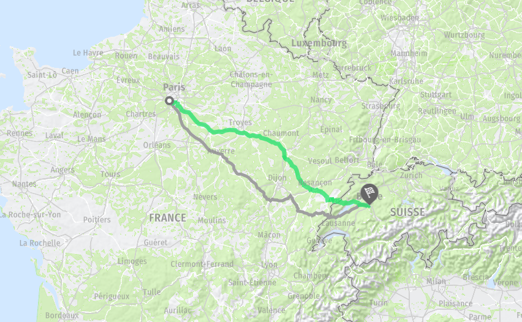
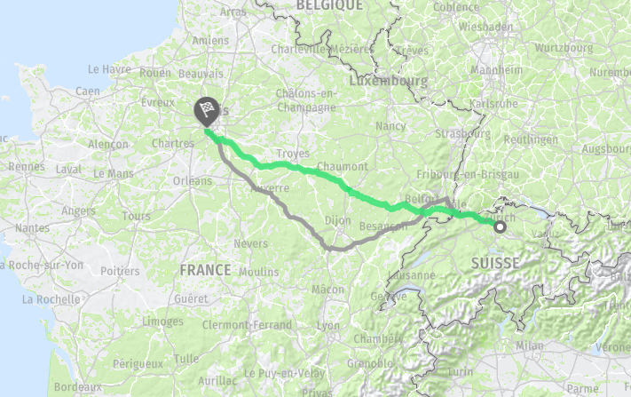

Trajets
L'entièreté des trajets sera réalisée en bus. Un car et son chauffeur sont mis à la disposition du groupe pendant l'entièreté du voyage.
Voyage aller : Vélizy - Berne

Le voyage aller entre Vélizy et Berne est prévu de durer entre 8 et 9 heures.
Le départ se fera depuis l'IUT à 5h du matin, un pique-nique est à prévoir.
Voyage retour : Zurich - Vélizy

Le voyage retour entre Zurich et Vélizy est prévu de durer entre 8 et 9 heures.
Le départ s'effectuera vers 11h pour une arrivée prévue à Vélizy vers 18h, un pique-nique sera fourni aux étudiants.